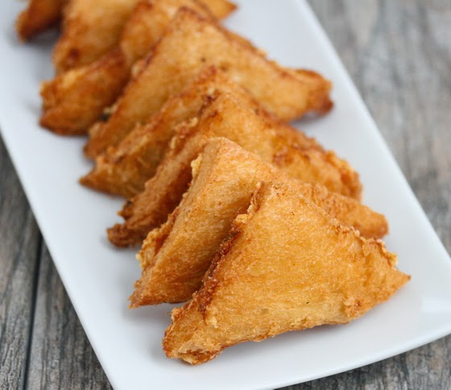

Shrimp Toast

Shrimp toast is the latest addition to our compendium of retro Chinese takeout recipes.
Ingredients/Variations
- SHRIMP
- CILANTRO
- SCALLIONS
- GINGER
- TOASTED SASAME OIL
- SUGAR
- SALT
- CORNSTARCH
- EGG WHITE
Just a few simple steps and a special dinner will be on the table!
- Process until smooth.
- Divide the mixture among 4 slices of sandwich bread, spreading it evenly out to the ends.
- Sprinkle with toasted sesame seeds, and lightly press the sesame seeds into the shrimp mixture.
- Cut each slice into quarters on a diagonal to create little triangles.
- Fry the triangles in the skillet, shrimp-side down first, until golden about 2-3 minutes.